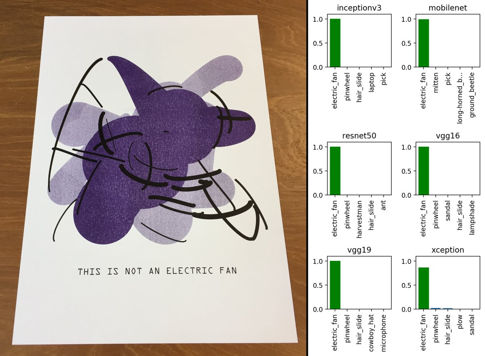

Einführung in Künstliche Intelligenz
https://www.heise.de/newsticker/meldung/Kuenstliche-Intelligenz-Facebook-sagt-Nutzerverhalten-voraus-und-verkauft-damit-Anzeigen-4024377.html
http://www.spiegel.de/wirtschaft/unternehmen/arbeitsmarkt-regierungsgutachten-rechnet-mit-job-gewinnen-durch-roboter-a-1200538.html
Notizen aus m3 quality talk von unten auf Brauchbarkeit hier checken
Christina Farr (@chrissyfarr) tweeted at 0:49 AM on Tue, Apr 03, 2018:
Me: Let’s talk about AI in medicine.
Hospital CIO on record: “It’ll augment our radiologists”
Off record: “Once the algorithm beats my $600k a year radiologist, it’ll replace at least some. And sooner than you think.”
(https://twitter.com/chrissyfarr/status/980940379607347200?s=03)
Get the official Twitter app at https://twitter.com/download?s=13
hardmaru (@hardmaru) tweeted at 2:39 AM on Wed, Mar 28, 2018: Feels weird to be playing inside of a recurrent neural network’s
hallucination of a Doom level. Demo→ https://t.co/ocrLd4Da6a https://t.co/VlhZ8LFnLy (https://twitter.com/hardmaru/status/978793678419369984?s=03)
Get the official Twitter app at https://twitter.com/download?s=13
- https://medium.com/@ageitgey/machine-learning-is-fun-part-8-how-to-intentionally-trick-neural-networks-b55da32b7196
Simulating the brain with many layers of neurons
Each layer getting a deeper abstraction from the raw visual input

Open Source TensorFlow Models (Google I/O '17)
https://github.com/random-forests/tensorflow-workshop/blob/master/extras/deep_dream.ipynb
Was ist das?

Kein Standard System erkennt eine solche Abweichung von der Norm
Wir Menschen haben damit aber kein Problem
Maschinen können momentan nur reproduzieren
Kleine Abweichungen im Kontext können zu komplett falschen Bewertungen führen

http://aiweirdness.com/post/171451900302/do-neural-nets-dream-of-electric-sheep
https://twitter.com/srchvrs/status/969618207416946688
https://twitter.com/JanelleCShane/status/969239712190746624
Systeme können bewusst getäuscht werden

the architecture of DNN is a strong prior on the input, and with random initializa- tion, is able to capture low-level input
structure particularly for images.
- https://openreview.net/forum?id=SJOYTK1vM
Wiederholung der Übung vom ersten Termin: Visionen für KI
Erstellt Visionen einer durch KI geprägten Zukunft
- Tut euch in Gruppen zusammen
- Erstellt 3 positive und 3 negative Visionen an die ihr persönlich für möglich haltet
- Haltet die Visionen als Skizzen fest
Als Abschluss stellen wir Visionen zur Diskussion vor
15 Minuten


Beispielergebnis: Negative Vision #1

Beispielergebnis: Negative Vision #2

Beispielergebnis: Positive Vision #1

Beispielergebnis: Positive Vision #2